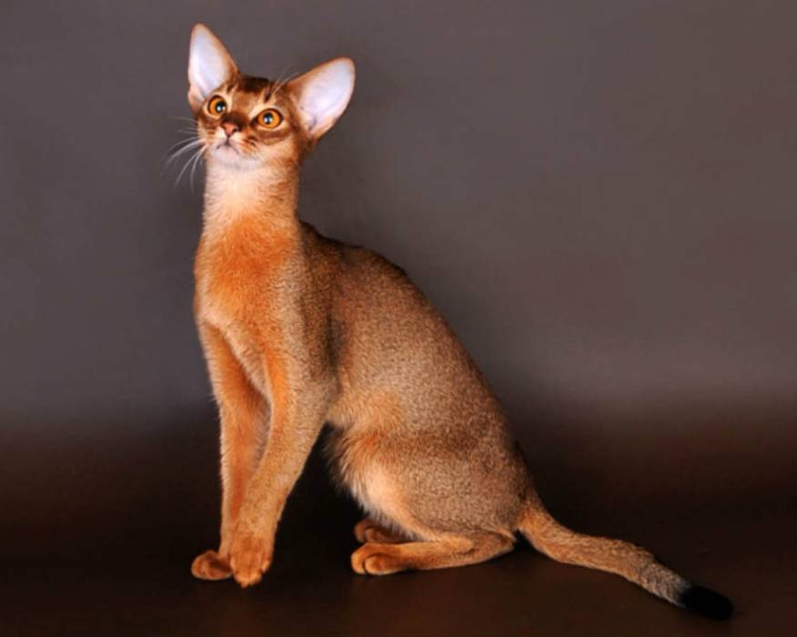
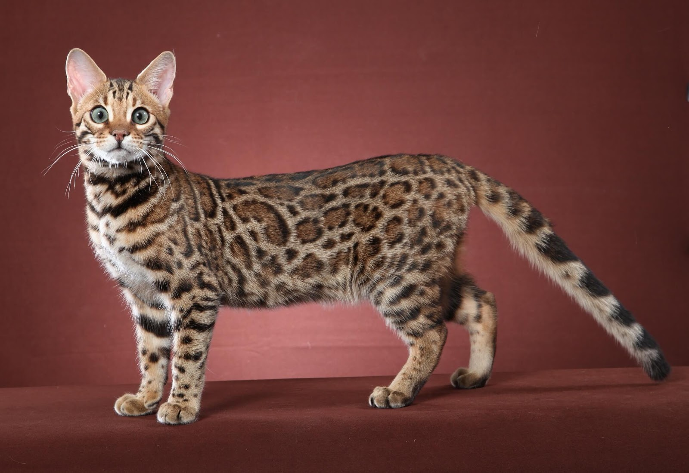
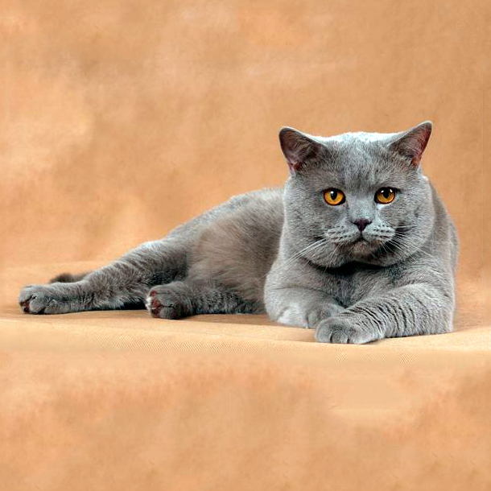
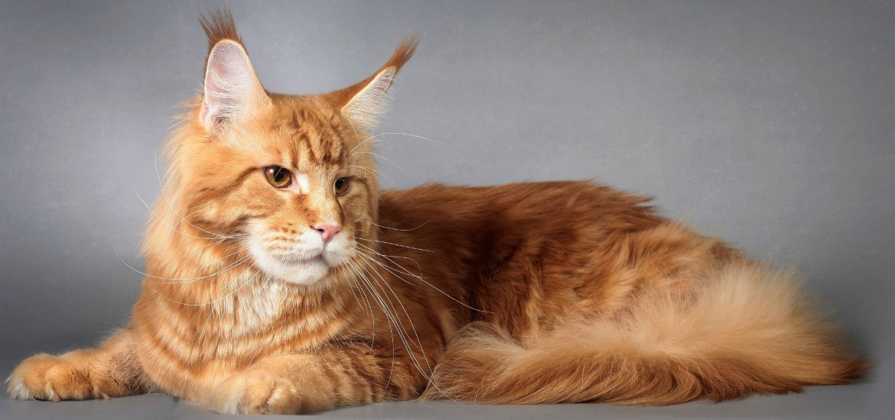
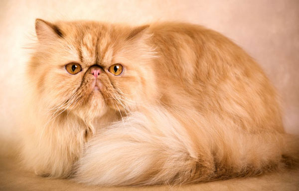
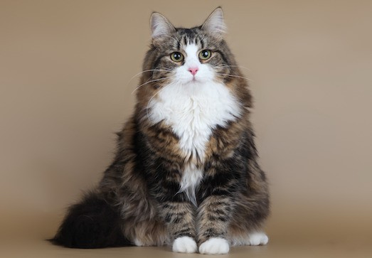
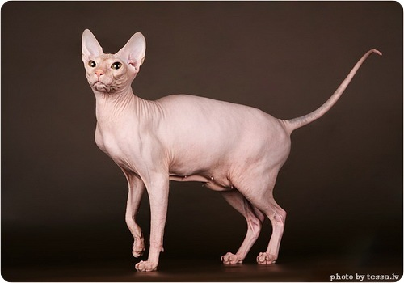
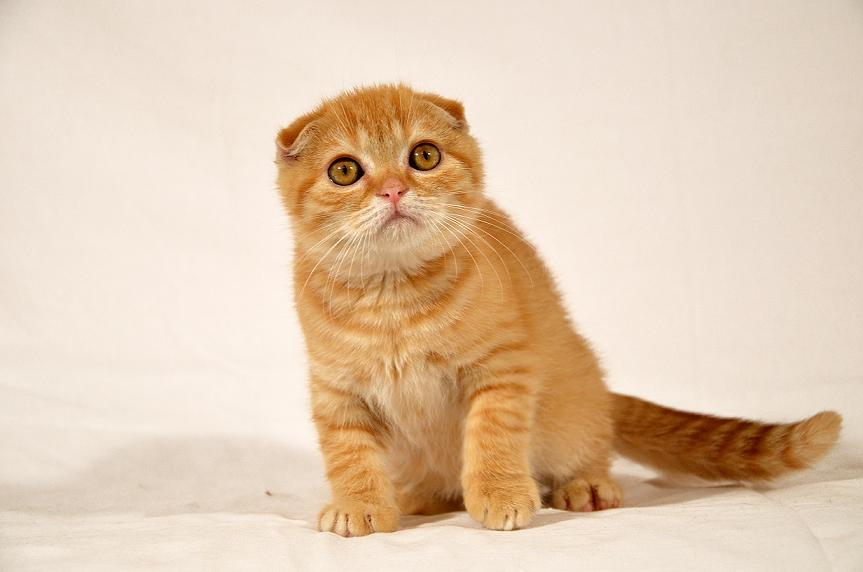

Описи основних порід котів
| Абісинська
| 
| Абісинські кішки — це тварини середнього розміру, стрункі, гнучкі. Тварина дуже слухняна, легко дресирується.
Можна привчити приносити предмети. Має ніжний і мелодійний голос. Потребує простору. Добре утримувати або вигулювати її у вольєрі.
|
| Бенгальська
| 
| Кішки бенгальської породи важкі, від середніх до великих розмірів, мають гармонійну статуру. Дуже прив'язуються до хазяїна, постійно потребують людського товариства.
Дуже активні й рухливі, люблять підніматися на плечі. А ще вони дуже люблять водні процедури, можуть навіть
приймати душ разом із господарями. При нагоді стараються вполювати все що рухається. Вони часто при полюванні або іграх видають хижі звуки, які не вміють видавати звичайні домашні коти.
Дуже розумні, при бажанні можна навчити грати у хованки та багато іншим речам.
Ці кішки дуже сміливі, вміють захищати свою територію.
|
| Британська короткошерста
| 
| Британські короткошерсті кішки — це тварини від середніх до великих розмірів, міцні, компактні. Характерним є блакитне забарвлення.
Кішки британської породи невибагливі, мають чудове здоров'я. Активні, рухливі, легко звикають до людей.
|
| Мейн-кун
| 
| Мейн-кун — кішка середнього, а часом і великого розміру, міцної будови. Справляє враження сильної, кремезної кішки.
Мейн куни витривалі й активні. Легко адаптуються до різноманітних умов навколишнього середовища. Кішки мають тихий, приємний, мелодійний голос.
|
| Перська
| 
| У перських кішок тіло приосадкувате. Розміри — від великого до середнього. У силу свого характеру перська
кішка не завжди може захиститися від собак. Тому кішок цієї породи краще не випускати на вулицю.
Інколи вони бояться виходити туди. Є схильність до закупорки слізних каналів.
|
| Сіамська
| 
| Кішки сіамської породи — це елегантні, стрункі тварини середньої величини. Їхній допитливості немає меж. Дуже «говіркі».
Мають специфічний голос. Вони ніжні й ласкаві. Одночасно сіами вимогливі, наполегливі й часом нав'язливі.
|
| Сибірська
| 
| Підійде алергікам.
Сибірські кішки — це середні й великі за розміром, сильні, масивні тварини.
Можуть жити в приміщеннях, але воліють частіше бувати на вулиці.
|
| Сфінкс
| 
| Деякі різновиди породи гіпоалергенні.
Кішки сфінкса — це тонкокістні, але міцні тварини середнього розміру зі складчастою, гарячою на дотик шкірою
Легко навчаються й можуть виконувати команди. Дуже прив'язуються до людини, люблять спілкуватися.
Не вважають себе кішками, поводяться нарівні з людиною. Уживаються з іншими тваринами.
|
| Шотландська капловуха
| 
| Кішки шотландської капловухої — це тварини середньої величини, округлих ліній. Завдяки своїм вухам мають оригінальний вигляд. Легко знаходять спільну мову з іншими свійськими тваринами. Прив'язуються до людей.
|